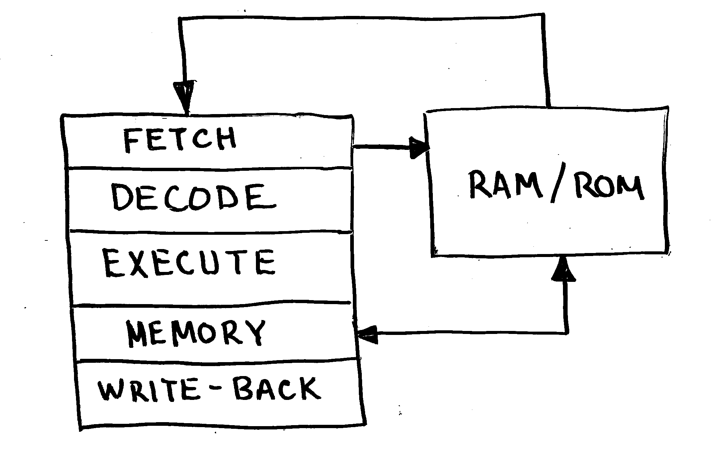
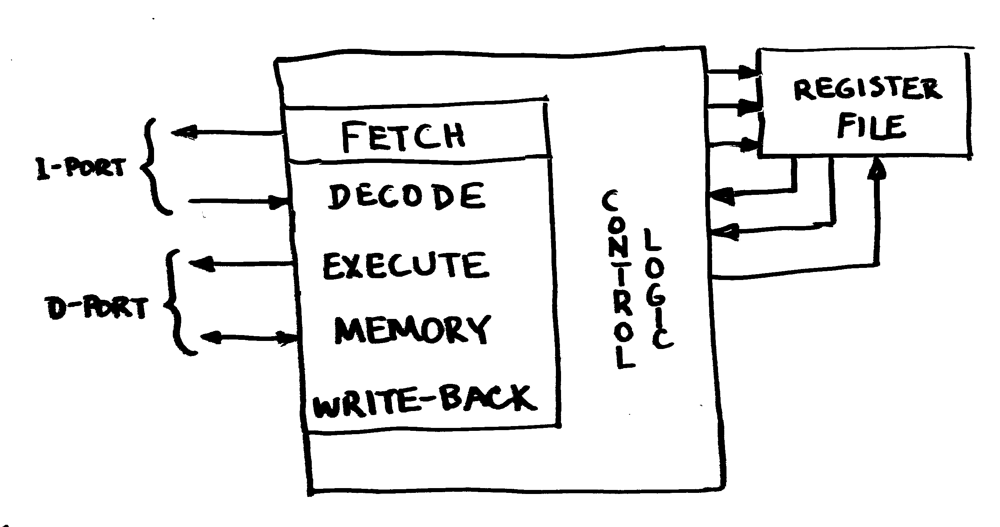

- KCP53000 went through several names during its development.
- Original name long forgotten.
- Polaris (trademarked by AMD for a line of GPUs)
- Now, KCP53000.
- We want what Intel, AMD, et. al. doesn't want.
- Be proactive in avoiding legal issues.
Selected Lessons Learned
Building the KCP53000
Samuel A. Falvo II <kc5tja@arrl.net>
I do not have a name,
I have a number!
I am a free core!
Use numbers, not names.
They're harder for companies to trademark.
Avoid Premature Pipelining
Get it working first.
Avoid Pipelining At First.
Build slow, sequenced, working implementation first.
- First 4 attempts at building pipelined CPU failed.
- Hockey-stick complexity; can't keep it all in your head at once.
- Premature evil is the root of all optimization.
Avoid Pipelining At First.
Build slow, sequenced, working implementation first.
- 5th attempt was successful.
- Two stage pipeline.
- PLA-based sequencer just like the 6502.
- Instruction fetch and instruction execution currently take turns.
- Easy to alter PLA terms to allow simultaneous operation later.
Pipeline Design Documents Are Misleading
They're not wrong; but, they're not right either.
Data is shown going from stage to stage to stage, sequentially.

Pipeline Design Documents Are Misleading
They're not wrong; but, they're not right either.
Pipeline stages really are independent units cooperating under centralized control.
Pipeline Design Documents Are Misleading
They're not wrong; but, they're not right either.
- Much easier to refactor later on.
Current KCP53000 pipeline structure: 
Pipeline Design Documents Are Misleading
They're not wrong; but, they're not right either.
- Opportunities for optimization:
- Overlap instruction fetch with everything else (60%-100%)
- Perform both register fetches at once (25%-33%)
- Mirror BRAMs to emulate 2R1W register file (30%-50%)
- These compound.
- Given same 25MHz clock, what once ran at 6 MIPS now runs between 16 and 24 MIPS
Count Furcula
64 bits! Ah! Ah! Ah!
Furcula Bus
Fork of Wishbone B3 to Meet CPU's Needs
- Justified data transfers: no byte lanes.
- Full address bus exposed: no elision for lower address bits.
SIZ_O(n:0)exposed to indicate size of current transfer.SIGNED_Oexposed to let external circuitry handle sign-extension.- Otherwise, identical to Wishbone B3.
In retrospect, SIGNED_O is a mistake, but only a small one!
Wishbone vs. Furcula Bus
Intel-style vs. Motorola-style Bus
How Wishbone Byte Lanes Work
| Byte 0 | Byte 1 | Byte 2 | Byte 3 | HWord 0 | HWord 1 | Word | |
|---|---|---|---|---|---|---|---|
| DAT_IO[7:0] | X | X | X | ||||
| DAT_IO[15:8] | X | X | X | ||||
| DAT_IO[23:16] | X | X | X | ||||
| DAT_IO[31:24] | X | X | X |
Wishbone vs. Furcula Bus
Intel-style vs. Motorola-style Bus
How Furcula Justification Works
| Byte 0 | Byte 1 | Byte 2 | Byte 3 | HWord 0 | HWord 1 | Word | |
|---|---|---|---|---|---|---|---|
| DAT_IO[7:0] | X | X | X | X | X | X | X |
| DAT_IO[15:8] | X | X | X | ||||
| DAT_IO[23:16] | X | ||||||
| DAT_IO[31:24] | X |
Furcula Bus
But, ..., why?!
-
Allows direct CPU-to-external-circuitry connection.
-
Intel CPUs pre-decode size and lower address bits to break data into individual byte lanes.
- Buses out-live CPUs.
- Supporting legacy buses requires resynthesizing information from byte lane enables.
- Thus, bus bridge circuitry must "undo" what CPU-internal circuitry already did.
Furcula Bus
But, ..., why?!
-
Therefore, just let external circuitry handle alignment and sign-extension exactly ONCE.
-
Trivial to bridge to Wishbone B3.
- Just needs some data bus multiplexors to route data to/from byte lanes.
- Handful of gates to decode byte lane select signals.
- Sign-extension logic.
Shoulda, Woulda, Coulda.
I should have chosen Wishbone B4 over Wishbone B3.
Wishbone B3
Open Hardware's First Standard SoC Interconnect
Closer in scope to PCI bus than something like AXI4.

Wishbone B3
Open Hardware's First Standard SoC Interconnect
ACKmust be asserted in same cycle (<= 35ns for 25MHz operation) to achieve single-cycle transfers.
Wishbone B3
Open Hardware's First Standard SoC Interconnect
ACKmust be negated after transaction if accessing same slave back to back. (50% efficient)
Wishbone B3
Open Hardware's First Standard SoC Interconnect
To get 100% efficiency on bus, you must:
- Use fully asynchronous slave logic that responds in 35ns or less (assuming 25MHz bus).
- Ensure at least one address bit changes between cycles, so slave can detect end of one cycle and start of another.
- Alternatively, declare adjacent transactions to the same address undefined, and let software do the right thing.
Wishbone B3
Why It Fails for Kestrel-3
- Bus bridges and adapters add propegation delays to address decoding logic.
- Brings max. clock speed from around 100MHz to 30MHz. Ouch!
- Demonstrably incompatible with PSRAM chip timings on Nexys-2 board.
Kestrel-3 takes around 33ns from address valid to ACK_I. (Remember, 35ns was our limit!)
Wishbone B3
Why It Fails for Kestrel-3
- Improving performance requires introducing multiple clock domains, one for CPU, and one for Wishbone bus.
- Requires FIFOs and hard to debug async interlocks to work successfully.
- Works comfortably at somewhere below 20MHz clock speeds for something the size of Kestrel-3.
- For anything faster, you start to want something that works more closely and more locally with FPGA resources.
Wishbone B4 Pipelined
or: How I Learned to Stop Worrying and Love the Clock

Wishbone B4 Pipelined
or: How I Learned to Stop Worrying and Love the Clock
Observe:
CYCasserted as long as at least one cycle remains unterminated. No longer a bus request as such.STBnow is the prime determinant in whether or not a bus cycle is valid or not.ACKno longer scoped bySTB. It may arrive at any time after a correspondingSTB.STALL(not shown) used to throttle master if required.
Wishbone B4 Pipelined
or: How I Learned to Stop Worrying and Love the Clock
Address decode latency not cured by increasing clock or introducing pipelining. So why bother?
- Wishbone 3 works great at lower speeds because you have lots of time to generate
ACKfrom address andSTB. - As clock period approaches propegation delay between LUTs, glitches increasingly manifest.
- DFFs work like synchronizers. Every LUT has a corresponding DFF; adding them costs nothing.
Wishbone B4 Pipelined
or: How I Learned to Stop Worrying and Love the Clock
Address decode latency not cured by increasing clock or introducing pipelining. So why bother?
- Pipelining supports overlapping bus transactions without altering address decode latency.
- Easier to synchronize across different clock domains.
- Easier to bridge across different protocols. (Wishbone to RapidIO, for example.)
Acknowledgements
I used Slidedeck to prepare this slide deck.
I used Wavedrom to prepare the timing diagrams.
Thanks everyone!
Email Samuel A. Falvo II <kc5tja@arrl.net>
Web https://kestrelcomputer.github.io/kestrel
Github https://github.com/kestrelcomputer